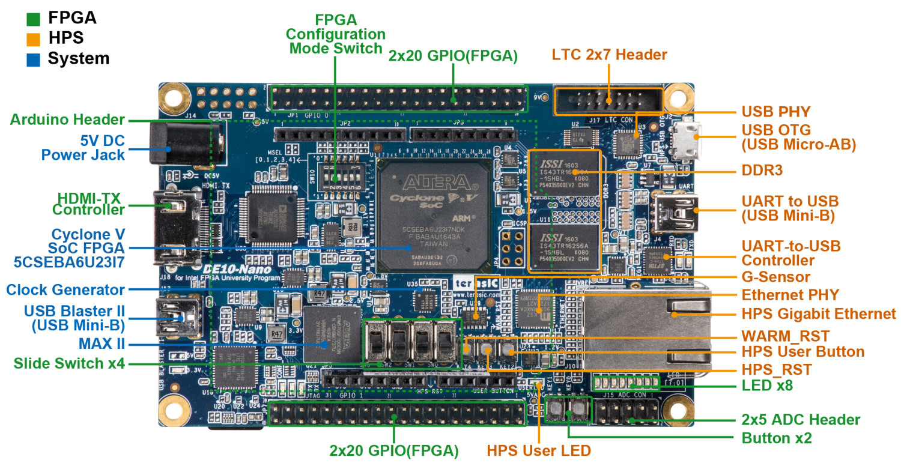

Design Plan¶
Note¶
- This is originally a project documentation, some files mentioned in this series can be found at this GitHub repo of mine
What are we gonna do?¶
- The Cyclone V SoC FPGA can be used as sequencer, counter etc. for the lab
- The FPGA passes the data it collected to the HPS processor via FIFO, the processor has a server running on it, so any client can get the data via XML http request etc.
- The client can also send data, through processor server, to control the FPGA
- We will use DE10-NANO Dev Board to do the above:

Front End¶
Technologies Used:
- Bootstrap 4
- Plotly.js
Notes:
- If the project scales, I will use React.js or Vue.js, but currently there is no such need
Quartus Project¶
Uses Cyclone V SoC: HPS (processor) + FPGA
What I’m already familiar with:
- C
- Verilog
- Quartus
What I need to learn:
- Communication between HPS and FPGA
Tutorials¶
- DE10 Nano User Manual Chapter 7 Examples for using both HPS SoC and FGPA
- DE1 SoC ARM HPS and FPGA Addresses and Communication Cornell ece5760
- Main page of the above: ece5760 Reading Material
- YouTube series of the above: Cyclone 5 and memory mapping